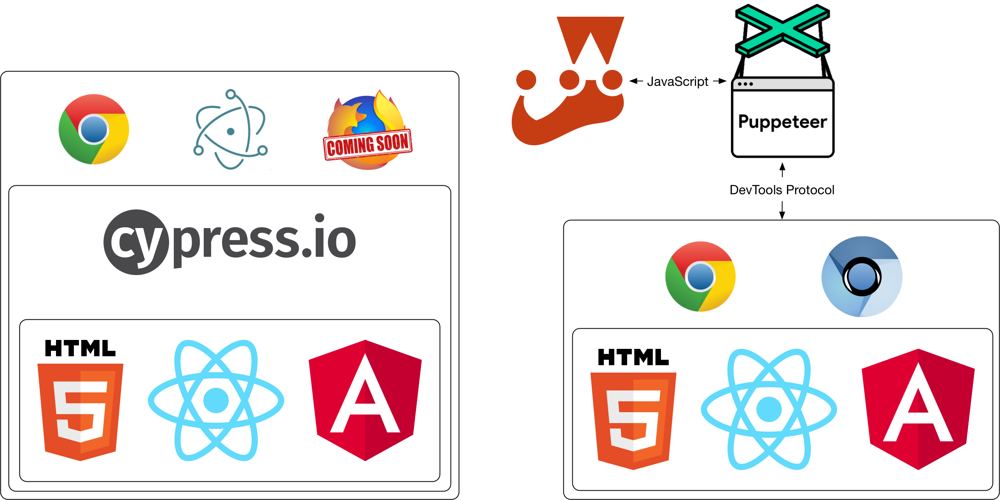

name: section layout: true class: center, middle --- name: normal layout: true class: top, left .footer[ Questions? <i class="fa fa-twitter" aria-hidden="true"></i> [@zukefresh][] | <i class="fa fa-github" aria-hidden="true"></i> [gsong](https://github.com/gsong) ] --- template: normal name: code layout: true class: middle, left --- template: normal name: center layout: true class: center, middle --- template: section # User-driven Testing ### With Cypress or Puppeteer George Song <i class="fa fa-twitter" aria-hidden="true"></i> [@zukefresh][] <i class="fa fa-github" aria-hidden="true"></i> <https://github.com/gsong> --- template: center # It’s All about the Customer ## User-driven Design → User-driven Development → User-driven Testing --- template: code .large[ * Codify customer workflow during feature development * Validate requirements with stakeholders * Demonstrate intent to other developers and QA ] --- template: normal  ??? * Both operate on the DOM, so is framework agnostic --- template: code | Cypress | Puppeteer | | --------------------------------------------------------------------------------------------------- | ------------------------------------------------------------------------- | | Designed for browser driven testing | General purpose API to drive Chrome | | Isolated test environment and runner | Relies on external test framework (e.g. Jest) | | Has its own testing centric DSL | Powerful Async/Await based JavaScript API which powers DevTools | | Work with jQuery $objects | Work with conceptual objects representing the browser and the DOM | | Page Object Pattern? Custom commands | Page Object Pattern? Helper functions | | Assert what *should* happen, `cy` will **keep trying until the condition is fulfilled** or time out | You figure out how to fulfill the test conditions, and you write the code | ??? * Can this replace Selenium? * How to use alongside component testing? * Make it easy so feature developers can write UI based tests --- template: center # Demo Time ??? * Taking screenshots --- template: code # Let's Look at Code ## Tests * [Cypress](https://github.com/gsong/birky50/blob/development/cypress/integration/navMenu.js) * [Puppeteer](https://github.com/gsong/birky50/blob/development/src/components/NavMenu/test.e2e.js) ## Taking Screenshots * [Cypress](https://github.com/gsong/birky50/blob/development/cypress/integration/screenshots.js) * [Puppeteer](https://github.com/gsong/birky50/blob/development/src/App/screenshots.e2e.js) ??? Do side-by-side comparisons --- template: code # Curious? .large[ * [Cypress.io](https://www.cypress.io) * [Cypress Trade-offs](https://docs.cypress.io/guides/references/trade-offs.html) * [Puppeteer](https://github.com/GoogleChrome/puppeteer) * [Cypress test code](https://github.com/gsong/birky50/blob/development/cypress/integration/navMenu.js) * [Puppeteer test code](https://github.com/gsong/birky50/blob/development/src/components/NavMenu/test.e2e.js) ] --- template: center # S(ch)wag Time [@zukefresh]: https://twitter.com/zukefresh